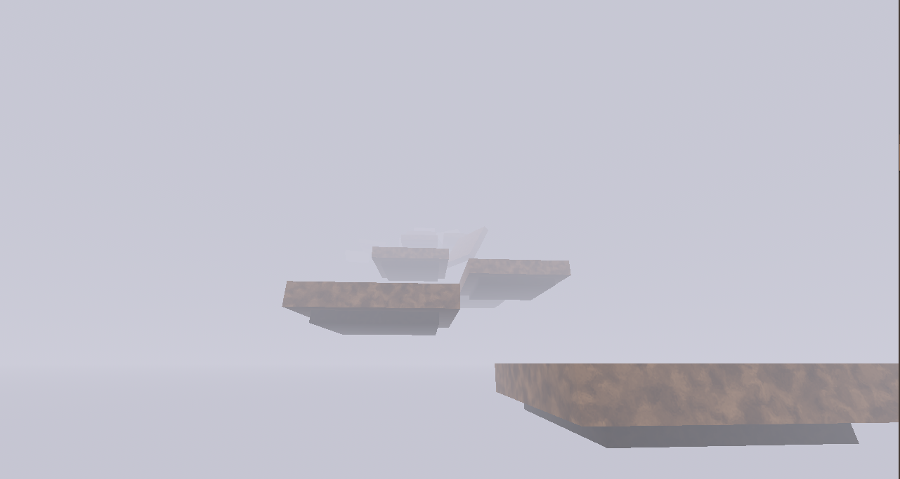
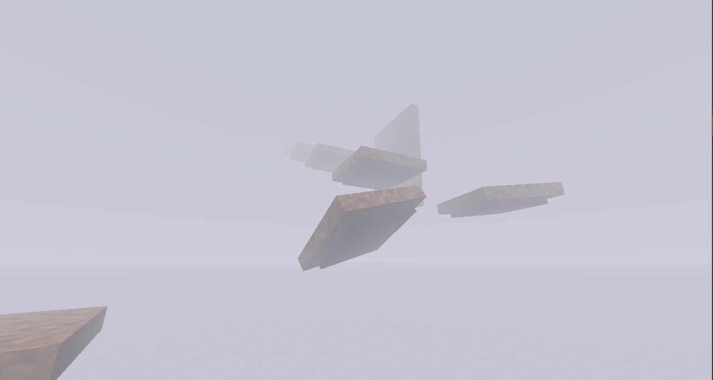

Обзор
3D-платформер от первого лица, построенный на Godot 4.7. Вы поднимаетесь сквозь густой туман: прыгаете по платформам, отталкиваетесь от стен.
- Вид от первого лица с живой камерой: покачивание при беге, приседание при приземлении, крен при стрейфе
- Прыжки от стен с замедлением времени рядом с поверхностью
- Автоматические чекпоинты - падение в туман возвращает к последней безопасной платформе
- Сборки для Windows и Linux
Игра разрабатывается ещё
Фото


Управление
Передвижение
WASD или стрелки: движение, мышь: обзор. Esc освобождает и захватывает курсор.
Прыжки
Пробел: прыжок. Прижмитесь к стене в воздухе и нажмите пробел, чтобы оттолкнуться от неё.